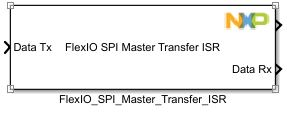
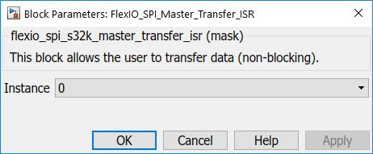

FLEXIO SPI Master Transfer ISR Block
This block allows the user to perform a non-blocking master transfer operation.
Note: SPI is a full-duplex protocol, so this block acts as a both Tx and Rx block.
Block Image
Inputs:
- Data Tx - data to be sent to the slave(UINT8 vector data type).
Outputs:
- Trigger - the user can trigger a subsystem at the end of transfer.
- Data Rx - received data from the slave (UINT8 vector data type).
Note: You send and receive a number of bytes equal to the size of Data Tx (input).
Parameters and Dialog Box
The block dialog consists of the following tabs:
General
Instance
Select an instance of flexio to use (must be linked with the Config block).
Note: The Config block linked to this block must have Interrupts mode selected.
Block Dependency
Block Miscellaneous Details
- None